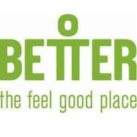

Nov 11 – present: customer services in Hastings Direct where I deal with customer quires, got moved to sales due to my performance and my rapport building and relationship with customers
Dec 2010 – Nov 11: Retail assistant at the early learning centre where I sell merchandise, clean and manage deliveries
November 2006 –July 2010: Casual fitness instructor and Hi 5 camp leader. At Oasis leisure centre experience included: (a) inductions, (b) cleaning, (c) training (d) working with kids (e) teaching kids how to play sport (f) creche (g) arts and crafts 
March 2008 – April 2008 : Sports therapist for the Swindon netball team. Jobs included: (a) Massaging netball athletes, (b) Assessing and treating injuries, (c) strapping & taping (d) attending a international netball game
February 2008: Worked & Run a workshop for Brazilian martial arts in Swindon College and opened a workshop in town. Jobs included: (a) Gathering officials, (b) Teaching moves (c) Presenting (d) Selling equipment. And attended a martial arts ceremony in Beckton working as a Sports Therapist.